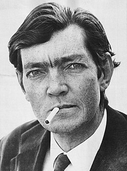

Julio Cortázar
1914-1984
Escritor y traductor
Julio Florencio Cortázar fue un autor y traductor argentino nacido en Bélgica en el año 1914. Considerado uno de los autores más innovadores y originales de su tiempo, fue maestro del cuento, la prosa poética y la narración breve en general. Fue también creador de importantes novelas, las cuales inauguraron una nueva forma de hacer literatura en el mundo hispano, pues rompieron los moldes clásicos mediante narraciones que escapan de la linealidad temporal. Debido a los contenidos de su obra, que transitan en la frontera entre lo real y lo fantástico, Cortázar suele ser relacionado con el realismo mágico e incluso con el surrealismo.
Cortázar nació en Ixelles, un distrito al sur de la ciudad de Bruselas, capital de Bélgica, país invadido por los alemanes en los días de su nacimiento. El pequeño «Cocó», como lo llamaba su familia, fue hijo de los argentinos Julio José Cortázar y María Herminia Descotte. Su padre era funcionario de la embajada argentina en Bélgica, donde se desempeñó como agregado comercial. Julio comentaría más tarde respecto a su nacimiento: «Mi nacimiento fue un producto del turismo y la diplomacia».
Tras realizar los estudios primarios en la Escuela N.º 10 de Banfield, se formó como maestro normal en 1932 y profesor en Letras en 1935 en la Escuela Normal de Profesores Mariano Acosta. Fue en ese entonces cuando comenzó a frecuentar los estadios para ver boxeo, donde ideó una especie de filosofía de este deporte «eliminando el aspecto sangriento y cruel que provoca tanto rechazo y cólera». Admiraba al hombre que siempre iba adelante y a pura fuerza y coraje conseguía ganar.
A los diecinueve años recién cumplidos, leyó en Buenos Aires Opio: diario de una desintoxicación de Jean Cocteau, traducido por Julio Gómez de la Serna y con un prólogo de su hermano Ramón. Este lo deslumbró y se convirtió en uno de sus libros de cabecera, acompañándolo por el resto de su vida.
Su primer cuento, «Bruja», fue publicado en la revista Correo Literario. Participó en manifestaciones de oposición al peronismo. En 1946, cuando Juan Domingo Perón ganó las elecciones presidenciales, presentó su renuncia. «Preferí renunciar a mis cátedras antes de verme obligado a sacarme el saco, como les pasó a tantos colegas que optaron por seguir en sus puestos». Reunió un primer volumen de cuentos —publicado póstumamente— titulado: La otra orilla. Regresó a Buenos Aires, donde comenzó a trabajar en la Cámara Argentina del Libro y ese mismo año publicó el cuento «Casa tomada» en la revista Los Anales de Buenos Aires, dirigida por Jorge Luis Borges, así como también un trabajo sobre el poeta inglés John Keats, «La urna griega en la poesía de John Keats» en la Revista de Estudios Clásicos de la Universidad de Cuyo. En 1947, colaboró en varias revistas, entre ellas, Realidad. Publicó un importante trabajo teórico, Teoría del túnel, y en Los Anales de Buenos Aires, donde aparece su cuento «Bestiario».
Entre sus obras mas notables se encuentran:
- 1951: Bestiario
- 1963: Rayuela
- 1973: Los libros de Manuel
- 1986: Divertimento
- 1986: El Examen
Premios
| Año | Distinción |
|---|---|
| 1974 | Premio Médicis |
| 1984 | Premio Konex de Honor |
Estilo e influencias
Cortázar sentía un gran interés por los antiguos escritores clásicos. En este interés fue fundamental la presencia del profesor argentino Arturo Marasso, quien lo incitó a leerlos prestándole libros de su propiedad.Un punto de inflexión juvenil en su manera de escribir se debió al libro Opio: diario de una desintoxicación de Jean Cocteau, el cual fue uno de sus libros fijos de cabecera. Cortázar sostuvo así desde su juventud una gran admiración por la obra de este autor, así como por la de John Keats, el cual continuó siendo con los años uno de sus poetas favoritos.
Sintió siempre una gran admiración por la obra del argentino Jorge Luis Borges, una admiración que fue siempre mutua pese a las diferencias ideológicas de los mismos; esto pues mientras Cortázar era un activista de izquierdas, Borges fomentaba el individualismo y rechazaba los regímenes totalitarios en general —aún pese a haber aceptado recibir condecoraciones de países en dictadura—.Sus gustos literarios eran muy amplios, y sentía una especial atracción por los libros de vampiros y fantasmas, lo que debido a su alergia al ajo, era motivo de bromas por parte de sus amistades. El mismo Cortázar afirmó haber leído más novelas francesas y anglosajonas que españolas, lo que compensaba leyendo mucha poesía española, incluyendo a Salinas y Cernuda, a quienes dedicó comentarios entusiastas.
Amistades
Cortázar fue amigo de numerosos escritores, algo lo cual quedó plasmado en los más de quinientos libros dedicados de su biblioteca personal al momento de su muerte. Mantuvo correspondencia entre 1965 hasta 1973 con la escritora argentina Graciela Maturo. También tuvo varios amigos pintores, como Sergio de Castro, Luis Seoane, Julio Silva, Luis Tomasello, Eduardo Jonquières o Chumy Chúmez, extendiéndose su interés artístico hacia las artes plásticas. Dentro de sus grandes amigos literarios se encuentran, además de muchos otros, Lezama Lima —de cuya obra fue un importante difusor—, Octavio Paz, Pablo Neruda y Carlos Fuentes. Cortázar también cultivó junto a su esposa Aurora Bernárdez una estrecha relación con la poeta Alejandra Pizarnik, adoptando hacia ella una actitud de hermanos mayores. Otra amistad, mezclada con amor, pasión y respeto y admiración profesional fue la que mantuvo durante los últimos años de su vida con la entonces joven escritora Cristina Peri Rossi a quien dedicó el poemario "Quince poemas de amor para Cris".
Últimos años y fallecimiento
En agosto de 1981 sufrió una hemorragia gástrica y salvó su vida de milagro, pero eso no le impidió seguir escribiendo. Poco después, el presidente François Mitterrand le otorgó la nacionalidad francesa. Dos años más tarde, en 1983, tras la vuelta a la democracia en Argentina, Cortázar hizo un último viaje a su patria, en donde fue recibido por sus admiradores, quienes lo pararían en la calle o bien le pedirían autógrafos, en contraste con la indiferencia de las autoridades nacionales —el presidente Raúl Alfonsín se negó a recibirlo—. Ya de regreso en París, vivió sus últimos años en dos casas: una en la rue Martel y otra en la rue de L'Eperon. La primera correspondía a un pequeño apartamento ubicado en un tercer piso sin ascensor, cómodo, luminoso y lleno de libros y discos de música, donde solía recibir amablemente continuas visitas de otros escritores que pasaban por la ciudad, en compañía de su gata Flanelle
Carol Dunlop había ya fallecido el 2 de noviembre de 1982, sumiendo a Cortázar en una profunda depresión. El 12 de febrero de 1984, a causa de una leucemia, Cortázar falleció. Sin embargo, en 2001, la escritora uruguaya Cristina Peri Rossi afirmó en su libro sobre el escritor que creía que la leucemia había sido provocada por el sida, virus que Cortázar habría supuestamente contraído durante una transfusión de sangre en mal estado en el sur de Francia. Dos días después, fue enterrado en el cementerio de Montparnasse, en la tumba donde yacía Carol Dunlop. La lápida y la escultura fueron hechas por sus amigos: los artistas Julio Silva y Luis Tomasello. A su funeral asistieron muchos amigos, así como sus ex-parejas Ugné Karvelis y Aurora Bernárdez. Esta última, lo atendió durante sus últimos meses, tras el fallecimiento de Dunlop.